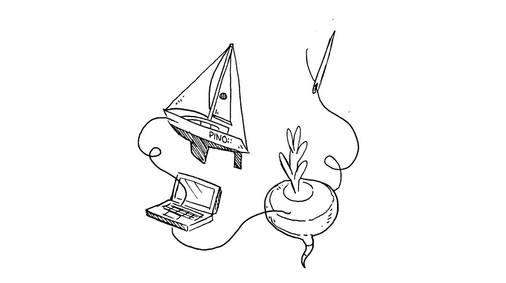

documenting
Wiki. In April 2021, this website was converted into a wiki. This type of website is a kind of archive and mirror of everything that we have done, and that we have learnt. It's a living document that outlines where we've been, and a tool that advises where we could go.
Rek is the steward of this wiki, and authors most of its write-ups and articles(unless stated otherwise). Devine proofreads Rek's writing, and appends to the documentation of our projects regularly. You can download a copy of the entire website content and sources as a .zip.
In all that is shared on the many pages populating this wiki, we reserve the right to be wrong, and to change our minds. We are always learning, and deepening our view and understanding of any one thing.

Videos. Between 2016 and 2020, we filmed our travels. We filmed regularly, but kept many experiences to ourselves, wishing to be present during worthwhile moments instead of hiding behind a lens. At the end of each month, we would watch our footage and write a summary of that month's events. We planned the monthly videos ahead, and we would gather footage based on what we needed. While one was busy recording the narration, the other would write music. We had our respective tasks when it came time to edit, but both of us took part in the filming.
In rough weather, we prioritize our own safety above all, and so we rarely had footage of rough seas.
What we use to film and edit our videos:
- GoPro Session4, used, donated by Lloyd Williams in 2022.
- Sony a7, used, donated by TokyoLuv in 2019, with Novoflex's NEX/LEM Adapter to fit M-Mount lenses(photos/video).
- Sony a6000(see photo).
- Sony PCM-A10(audio recording)
- Blender(video editing)
- orca(music making)
- Gimp(credit illustrations)
What we use to take and process the photos featured on this website.